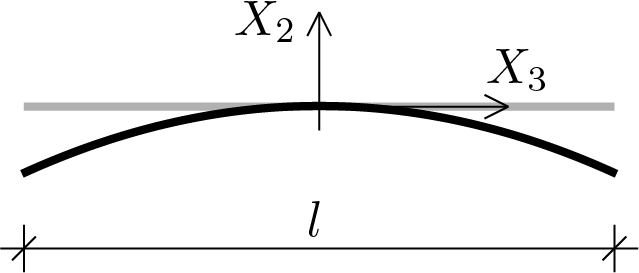
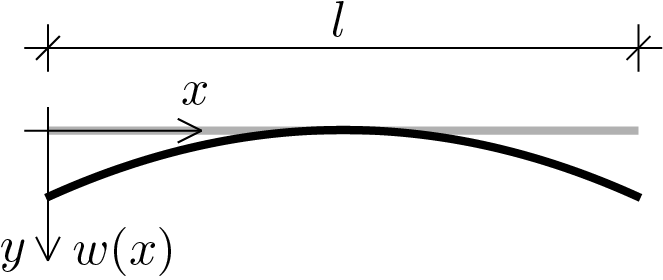
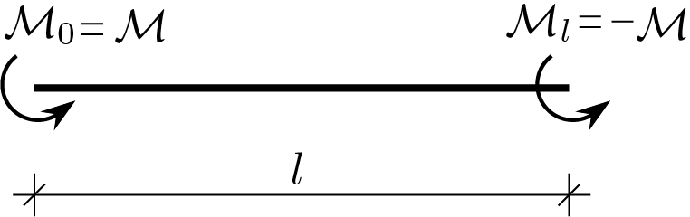
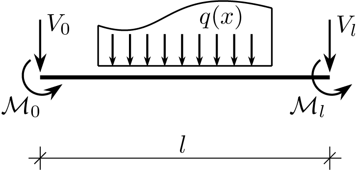

In describing the bent beam model, we will follow the same scheme adopted in the previous section for the stretched beam. The general premise, see Subsection 3.5.1, is always valid, therefore the considerations underlying the one-dimensional reduction and the observations made during the presentation of the model of the stretched beam always apply without any modification. In the following discussion we take as reference a different 3D solution, i.e. the solution found for the prismatic solid simply bent, see the Subsection 3.4.2.
Subsection3.6.1the reference given by the beam axis
Evaluating the displacement field obtained for the prismatic solid simply bent, Eqs. (3.4.25), (3.4.26) and (3.4.27), along the beam axis it gives
solution which establishes that the beam axis deforms following a parabola contained in the \(X_3 \text{,}\) \(X_2 \) plane and everything is determined only by the displacement component \(u_{2} \) directed transversely to the axis.

Figure3.6.1. The main goal, however, remains to describe the strain component \(\varepsilon_{33} \) depending on the displacement \(u_3 \) that cancels on the beam axis. The description of \(u_3 \) can however deduced by observing that
which highlights the link of \(u_3 \) with the displacement component \(u_2 \) of the beam axis. On this basis we can evaluate the component \(\varepsilon_{33} \) obtaining
which shows also how \(\varepsilon_{33}\) depends on \(u_{2}\) component relative to beam axis.
What has been discussed can be reformulated on the basis of the notation currently used, see the figure below, in our model for a plane bent beam.

Figure3.6.2. Therefore the kinematic variable of the one-dimensional model is the transverse displacement \(\func{w}{x} \) of the beam axis and the only significant strain component for the model is
\begin{equation}
\varepsilon = - y \frac{d^2 w}{dx^2}\,.\tag{3.6.6}
\end{equation}
Subsection3.6.2internal work
The one-dimensional formulation of the internal work (3.5.1) becomes
represents the curvature, the kinematic entity work-conjugate with \(M\text{.}\) The measure for \(M\) is \(\left[\text{F}\,\text{L}\right]\) and for \(\chi\) is \(\left[1/\text{L}\right]\text{.}\)
Subsection3.6.3elastic constitutive law
The definition of the elastic constitutive law for the one-dimensional model is obtained by reworking Eq. (3.6.8) as follows
\begin{equation}
M = EJ\, \chi \,.\tag{3.6.10}
\end{equation}
Relationship that highlights how the proportionality coefficient that defines the link between \(M \) and \(\chi \) is given by the product between the Young's modulus of the material and the moment of inertia of the cross-section of the beam, \(J = \int_{A} y^2 \, dS \text{.}\)
Subsection3.6.4external work
Also for the bent beam, as already done for the stretched beam, the model does not limit itself to treating only the external loads, shown below, related to the 3D solution taken as a reference.

Figure3.6.3. Instead, an assignment of external loads of the type shown in the following figure is allowed.

Figure3.6.4. We then introduce the load per unit of length \(\ func {q} {x} \text{,}\) load transversal to the axis of the beam and directed as shown. On each end of the beam there is a concentrated moment and a vertical concentrated force. External work therefore takes on the following expression
where the end moments perform work on the beam rotations, rotations that are related to the transverse displacement \(\func{w}{x} \) through the relationship
As a consequence of this choice, the variability of \(\func{w}{x} \) is extended beyond the quadratic pattern, while bending moment and curvature, unlike the 3D solution from which we started, can be more than constant and described by generic functions \(\func{M}{x}\) and \(\func{\chi}{x}\text{.}\)
Subsection3.6.5virtual work principle and equilibrium equations
With respect to our bent beam model the virtual work principle can be written as
At this point it is necessary to apply the integration by parts to internal work twice in order to extract the equations of equilibrium and the static boundary conditions. Double integration by parts provides
Also for the bent beam model the equations of the model can be used to eliminate \(M \) and \(\chi \) from the unknowns and maintain only the displacement \(\func{w}{x} \text{.}\) The following steps show how to achieve this